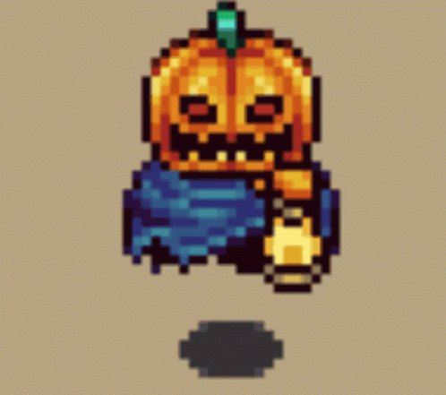

Un juego de rol o JDR (traducción típica en español del inglés role-playing game) O sus siglas RPG, literalmente «juego de interpretación de roles» es un juego en el que uno o más jugadores desempeñan un determinado rol, papel o personalidad.
 Mira mi sitio web